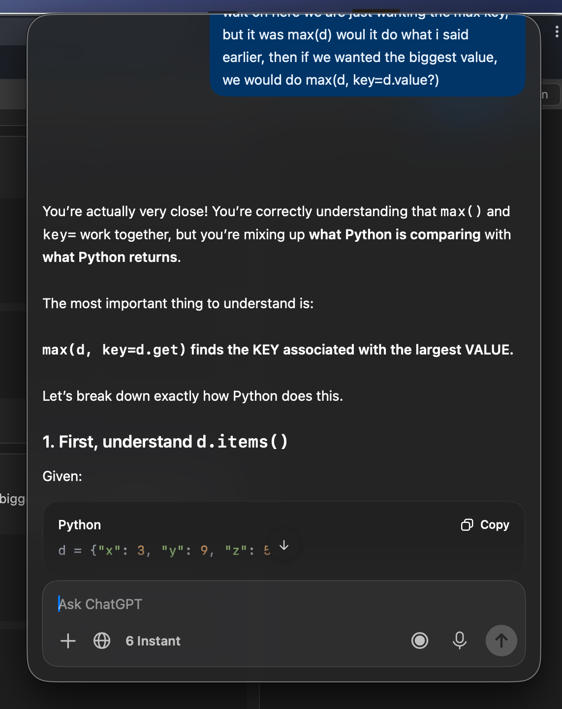

Issue #21. Each mock is the 520 x 680 pt Pauri panel on glass, over a busy desktop, with the same chats, the same answers, and the same input area. The input box, chips, model picker, mic, and orb are drawn the same in all four (picked in #10 and #17); only the chrome around them differs: the header, the message list, the empty state, spacing, and type. Under each panel, the buttons switch its state: Empty, Short (one exchange), Long (a tool step, an approval card, and a long Markdown answer with code), Context full (the long-chat banner over the long chat), and History. Press Cmd+K with the pointer over a panel to open its history, Esc to close it. Search filters the list and the trash icon deletes a chat. This ticket wires only the panel; the history surface is built in #22. References, for feel and not layout: the ChatGPT window (below) and Raycast AI chat (raycast.com). No Raycast screenshot was sent at gate 1, so it is named here only.

ChatGPT window (docs/reference/chatgpt-window.png)